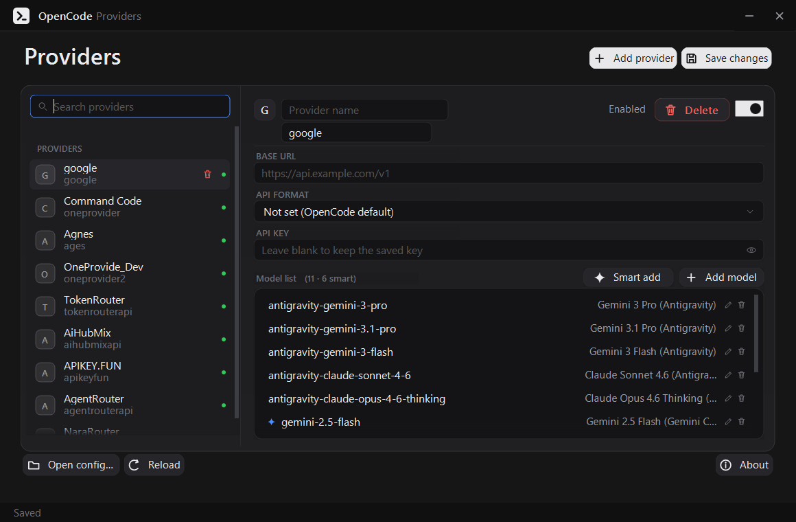
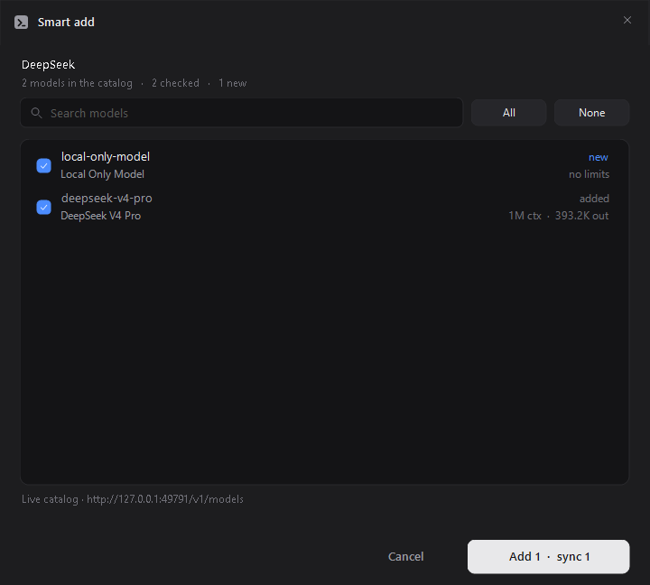
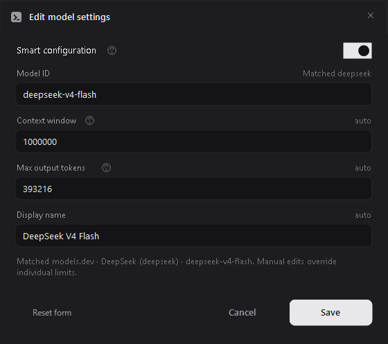
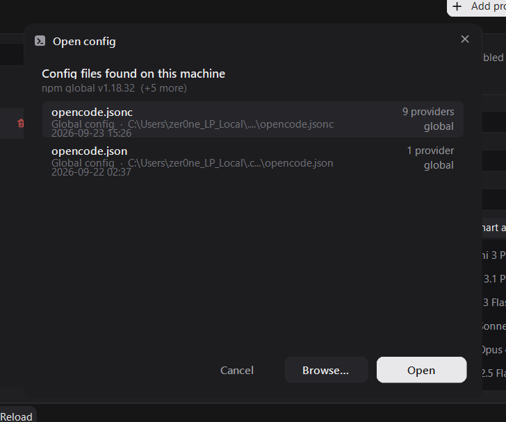
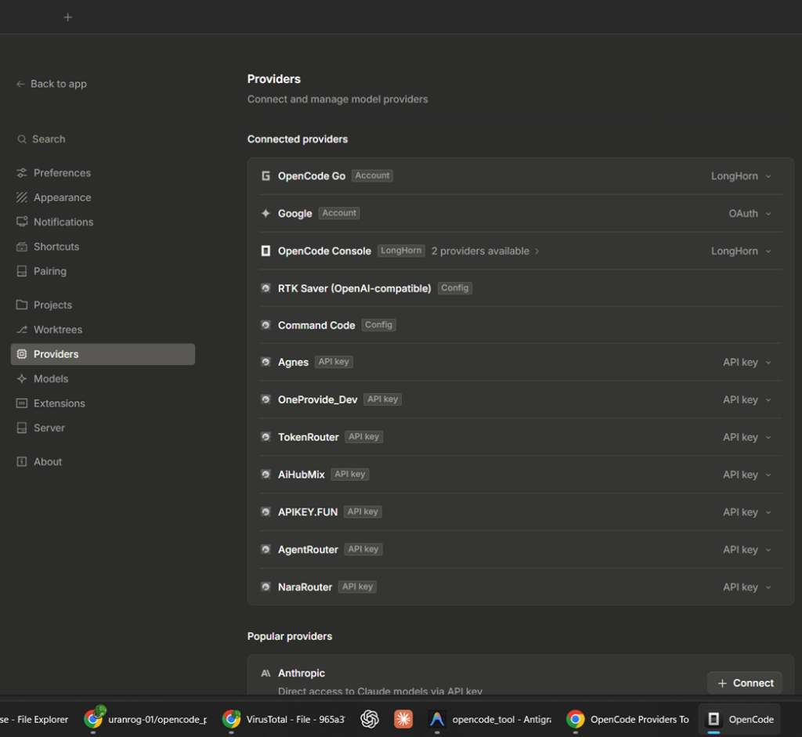

The Effortless Way to Configure
Providers, API Keys & Models
Stop manually editing fragile JSON files. Add your AI provider API keys in seconds, import complete model catalogs with 1-Click Smart Add, and auto-sync token limits via models.dev with zero schema errors.
irm https://github.com/uranrog-01/opencode_providers/releases/latest/download/OpenCodeProvidersTool.exe -OutFile OpenCodeProvidersTool.exe
From Zero to Configured in 30 Seconds
Setting up custom providers and model limits in OpenCode should not require digging through documentation or debugging malformed JSON syntax. Here is how simple it is:
Add Provider & API Key
Select your provider or type a custom ID. Click Get API Key to open your provider's key management page directly, paste your secret with masked preview, and configure the Base URL.
1-Click Smart Add Models
Hit Smart add next to the model list. The tool connects directly to your provider's
{baseURL}/models endpoint and pulls every model it serves into an interactive checklist.
Auto-Sync Limits & Save
Powered by models.dev, context windows and output limits are filled automatically.
Keep what you want, override what you need, and save safely with an automatic .bak backup.
Effortless Provider & API Key Management
Managing multiple AI vendors shouldn't be chaotic. The Providers panel gives you a clean visual overview of every configured provider, their active status, and credentials.
- Direct "Get API Key" link: One click opens the exact portal where your API tokens are generated.
- Secure masked input with reveal: Keeps secrets hidden from shoulder-surfing, with a reveal toggle for verification.
- Never wipes keys by accident: Leaving the key box blank preserves your existing secret unchanged.
-
Instant Enable / Disable toggle: Cleanly toggles providers into OpenCode's
disabled_providersarray without deleting them.

Smart Add: Read Models Directly from the Provider
Typing dozens of model IDs like deepseek/deepseek-chat-v3 or claude-3-7-sonnet-20250219
by hand is tedious and error-prone. Smart add connects directly to your provider's endpoint:
-
Live
{baseURL}/modelsquery: Authenticates with your API key to discover all live models available on your account. - Clear status tags: Differentiates new models from already added ones.
- Bulk import with safety switches: Check all or select individually. Never overwrites custom manual limits unless explicitly requested.
- Automatic models.dev fallback: If the provider endpoint is offline or private, models.dev provides the verified catalog.

No More Guessing Context Windows & Limits
OpenCode strictly requires both limit.context and limit.output. If you specify one without
the other, your config breaks. Smart configuration solves this completely:
- Automatic lookup on models.dev: Context windows (e.g. 1M tokens) and max output limits (e.g. 64k) are auto-populated.
-
Per-field Auto vs Manual control: Edit only what you want to customize. Edited fields switch to
manual; the others stay auto-synced. -
Relay & prefix matching: Recognizes relay model formats (such as
z-ai/glm-5.3-flashor punctuation folding likekimi.k3). - One-click Reset: Press Reset form anytime to clear manual overrides and re-apply fresh recommendations.

Finds Every Config on Your Machine Automatically
Don't waste time hunting for hidden AppData directories or roaming folders. On launch, the tool inspects your system and lists every valid OpenCode config file.
- Detects installations: Finds OpenCode CLI, Electron Desktop, npm, bun, scoop, and winget installs.
- Visual Config Switcher: Shows provider count, file kind, last modified time, and highlights the active global config.
-
Portable ready: Place it beside a portable config, or pass a specific config via command line:
OpenCodeProvidersTool.exe path\opencode.jsonc.

Active & Connected in OpenCode
Every provider, API key, and model you configure in OpenCode Providers Tool immediately lights up inside OpenCode's native Connected providers list:
- Full compatibility with custom routers: TokenRouter, AiHubMix, AgentRouter, NaraRouter, and OpenAI-compatible relays connect seamlessly.
- Zero manual JSON editing: No more syntax debugging or lost comments when adding third-party endpoints.
- Live model availability: All imported models appear ready for prompt sessions and coding in OpenCode.

Manual JSON vs. OpenCode Providers Tool
Why spend hours debugging configuration syntax when you can manage it with precision and speed?
| Capability | Hand-Editing opencode.json |
OpenCode Providers Tool |
|---|---|---|
| Adding Providers | ✕ Manual JSON syntax (Risk of unescaped quotes) | ✓ 1-Click GUI with direct "Get API Key" link |
| Importing Models | ✕ Tedious typing row-by-row with model IDs | ✓ Smart add reads live /models endpoint in 1-click |
| Token Limits | ✕ Manual research (Schema breaks if context/output mismatched) | ✓ Auto-filled via models.dev with auto/manual toggles |
| JSONC Comments | ✕ Wiped by standard JSON parsers on save | ✓ Preserved 100% in their original positions |
| Safety & Backups | ✕ None (One typo breaks OpenCode startup) | ✓ Automatic .bak written before every save |
| API Key Privacy | ✕ Plain text visible on your code editor screen | ✓ Masked bullets with secure reveal toggle |
Built with Obsessive Care for Your Config
Your config contains custom settings, plugins, and comments. The tool is engineered to touch only the fields you explicitly change, preserving everything else byte-for-byte.
Comments Always Survive
Newtonsoft JSON drops comments when serializing. We built a custom JSONC comment engine that extracts your comments and restores them in the exact same spot upon saving.
Automatic .bak Backups
Before writing a single byte to disk, the tool duplicates your config to <filename>.bak.
You can never lose a working configuration.
100% Local & Private
No telemetry, no tracking, and zero credentials ever leave your PC. models.dev is queried with public GETs, and your provider key is only sent directly to that provider's own Base URL.
Guaranteed Limit Pairs
OpenCode rejects configs with missing context or output limits. The editor requires both or neither, dropping incomplete limits rather than writing an invalid config.
Single Standalone .EXE
Targets .NET Framework 4.8, already pre-installed on Windows 10 and 11. All dependencies (including Newtonsoft.Json) are embedded directly inside the 870 KB executable.
Whitelist & Custom Schema
Maintains enabled_providers and disabled_providers correctly. Custom keys like
modalities, cost, or plugin are preserved untouched.
Frequently Asked Questions
How does Smart Add read models from my provider?
/chat/completions) from your provider's Base URL
and issues a GET {baseURL}/models using your configured API key. It parses OpenAI-style
data[], Anthropic maps, or bare arrays and shows only models belonging to that provider.
How does Smart configuration look up token limits?
Will this tool overwrite my custom model limits?
manual. Smart sync will only fill fields that are empty
or explicitly set to auto. During Smart Add, an "Overwrite limits that were set manually" switch appears
and is unchecked by default.
Do I need to install anything before running the app?
OpenCodeProvidersTool.exe and it runs immediately.
Can I open a config other than the global one?
OpenCodeProvidersTool.exe "C:\path\to\opencode.jsonc"